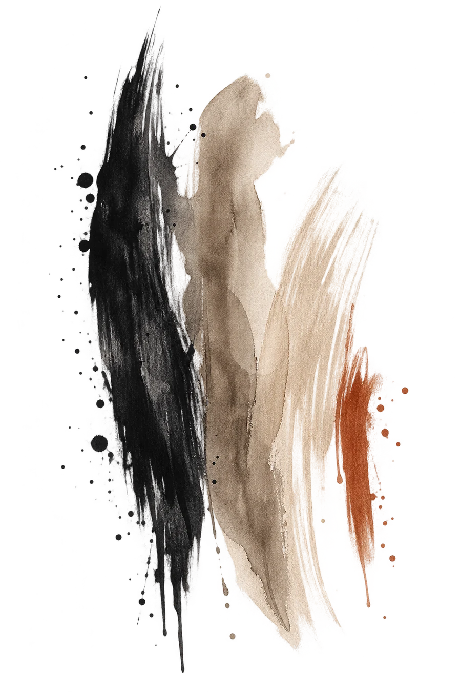

Working Artists
Portfolio and commerce websites built around the way artists actually work — originals, prints, commissions, exhibitions and collectors.
WEB DESIGN FOR ARTISTS • SELECT CREATIVE PROJECTS
Thoughtful, image-led websites designed to showcase your work, connect with collectors and create a clearer path to purchase.

Built around the work.
WEB DESIGN
An artist's website has to do more than look good. It needs to let the work command attention, make the collection easy to explore and give an interested collector a clear next step.
I design websites around the way working artists actually do business — presenting originals and prints, organizing bodies of work, handling sold pieces, building collector lists and creating straightforward paths to purchase or inquire.
Every project starts with the same question: what does this website actually need to accomplish for your work and your business?
Tell Me About Your Project →Portfolio and commerce websites built around the way artists actually work — originals, prints, commissions, exhibitions and collectors.
Image-led websites that make large bodies of work easier to explore while creating clear paths to purchase, book or inquire.
Thoughtful websites for authors and independent creative businesses that need a professional home for what they create.
SELECTED WORK
A successful artist website isn't simply a portfolio. It needs to help someone discover the work, understand what's available and know what to do when they're ready to own something.
Each site is structured around the artist's actual business rather than forcing the work into a generic website template.
ARTIST WEBSITE · E-COMMERCE
A custom fine-art website built around the artwork itself, with simplified navigation, limited-edition print presentation, collector-list integration and direct purchase pathways.
AUTHOR WEBSITE · REDESIGN
A redesign focused on simplifying an existing author website, strengthening book presentation, improving navigation and creating a cleaner experience across desktop and mobile.
Have an existing website that's getting in the way?
I'm happy to walk prospective clients through what I see, what I would change and why it matters.THE PROCESS
You don't need to arrive knowing exactly what your website should look like. That's part of the work.
We start with your work, your audience and what you want the website to accomplish.
I organize the content, establish the structure and develop the visual direction before the site is built out.
The website is designed for desktop and mobile, with clear navigation and purposeful paths to purchase, inquire or connect.
After final review and revisions, the site is connected to your domain and prepared to go live.
WEBSITE PROJECTS
Complete website projects for working artists and other creative businesses currently begin at:
$2,400Final pricing depends on the size, content and functionality of the site. Third-party expenses such as hosting, domains and e-commerce services remain separate and in the client's name.
Discuss Your Website →PAINTED GATE PUBLISHING
Publishing remains part of Painted Gate, but increasingly as a selective service rather than a volume business.
The focus is moving toward thoughtfully designed art books, photography books, coffee-table books and other visually driven projects where design is an essential part of the finished work.
Discuss a Publishing Project →THE APPROACH
“Good design doesn't compete with the work.
It gives the work room to speak.”
Painted Gate Creative is built from firsthand experience as a working artist. I understand the difference between an original and a reproduction, what happens when a piece sells, why an archive still matters, how collectors find work, how art shows feed an online audience and why the buying path can't become an obstacle.
That experience shapes every website I build. The goal isn't to make the website the star. It's to build the right stage for the work — and make it easier for the right people to respond to it.
START A PROJECT
Whether you're starting from scratch or rethinking an existing site, tell me a little about your work and where the current website is falling short. I'll review it personally and get back to you about the best next step.